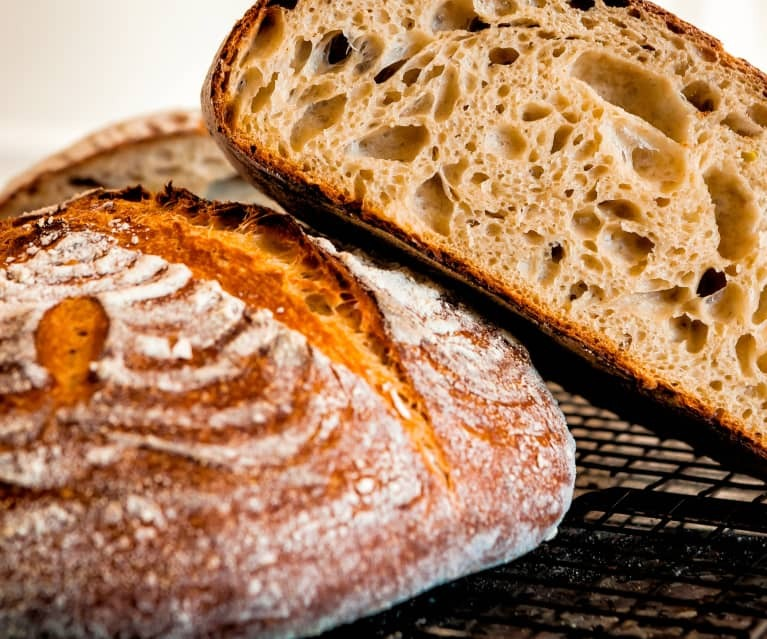

Types of Bread Offered Rye Bread $3.50 Our most famous bread! Flavorful bread made primarily from rye grain, known for its hearty texture and slightly tangy taste. Bagels $4.30 Round, dense bread with a chewy inside and a golden-brown crust. Focaccia $3.99 Italian flatbread known for its soft, chewy texture, and savory flavor. Infused with olive oil and topped with herbs. Pumpernickel Bread $5 Dark rye bread featuring a rich, earthy flavor. Its distinctive color and robust taste make it a unique and flavorful choice.  Sour Dough Bread $4.15 Tangy and chewy bread crafted through natural fermentation, featuring a crisp crust and soft interior. White Bread $2.50 Classic and versatile bread known for its light color and soft, fluffy texture. Sweet Bread $6 Has a mildly sweet flavor, often enhanced with ingredients like sugar, honey, or dried fruits. Banana Bread $4.30 Another fan favorite! A type of sweet bread made from mashed bananas.